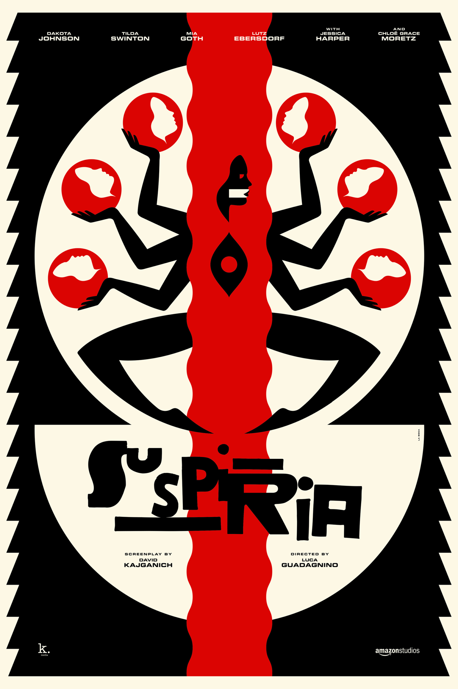
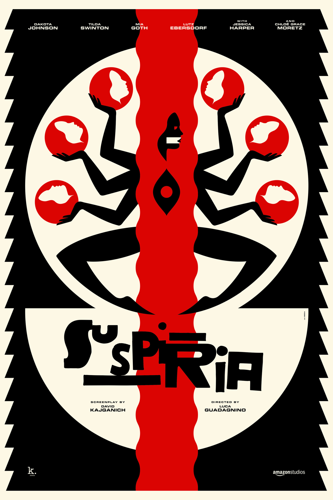

Boca
La Boca have the rare, impressive ability to create designs and artwork resembling some of the best album sleeves lurking in your dad’s record collection. The studio, founded in 2002, is based in west London and has gathered an envious collection of awards, including Cannes Lions, European Design Awards, and the AOI Illustration Awards. Their exquisitely executed, psychedelic style is the combined result of each of the studio's members' unique influences, having hailed from London, Bordeaux, Devon and Switzerland. “We work as a studio, so most of our designs are created as a team,” says Scott Bendall of La Boca. “It's not unusual to have two or three people working on a single piece.” Keen to work on more animated projects in the future, the team (based in two studios, one in London and one in Amsterdam) are never short on work from a selection of devoted clients. In their own words, La Boca’s creations are: “Retina teasing, tactile and occasionally slightly wonky.”
 
